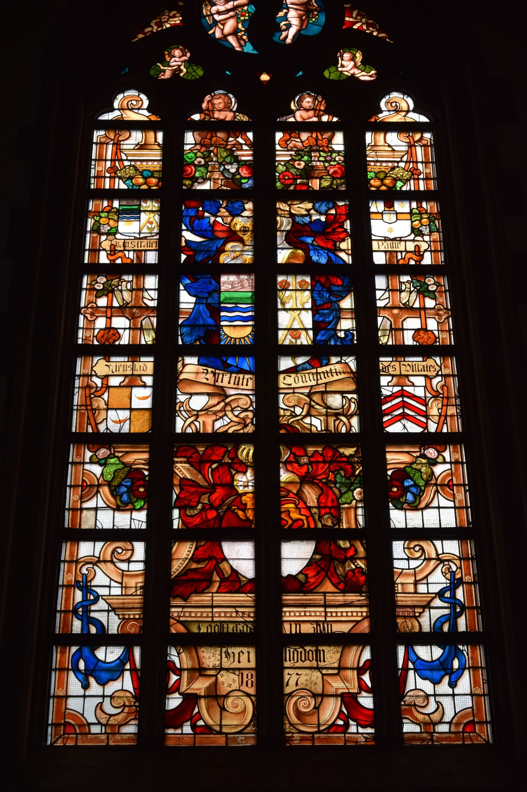

Case file 01 · Ecclesial
An east window for an old church.
A new three-light window for a parish church in North Yorkshire — contemporary in design, traditional in construction, and argued over in the nave before it was ever glazed. That argument is why it works.
- Client
- The parish of St Cuthbert
- Building
- Parish church, east wall
- Glass
- Mouth-blown antique, 11 colours
- Size
- 6.2 m² across three lights
- Pieces
- 341
- Status
- Installed October 2024
The brief
The 1968 east window — clear glass in tired lead — was bowing inward, with two cracked panels and lead fatigue throughout. An independent glass consultant's report, commissioned by the parish before this studio was involved, put re-leading at roughly 80% of the cost of a new window, keeping a design the parish had never liked. The PCC voted for new work. The brief, in the parish's words: the farming year of the parish, and light at the Easter dawn service. The money had been raised by the village over three years, which concentrates a studio's mind wonderfully.
The decisions
The design is contemporary and says so: four seasons as fields, a river band, and rising light — no saints in medieval dress, no fake ageing. The full-size cartoon was pinned in the nave for two consultation evenings; the parish argued, the river moved six inches, and the cartoon was signed. The Diocesan Advisory Committee visited, supported the contemporary approach in writing, and the faculty was granted eleven months after the first meeting — including a three-month delay when the first petition omitted the statement on the old window's disposal. The 1968 panels were recorded photographically and are stored by the parish; two sound panels now hang as a light panel in the parish hall.
The outcome
The window was installed over six days in October 2024, on a stainless ferramenta frame, the opening never left unglazed overnight. At the 2025 Easter dawn service the sunrise crossed the chancel floor as the parish had hoped — observed and reported by the vicar, not guaranteed by the studio; east windows keep their own counsel and the weather votes too. The vicar's verdict on the process is on the Studio page. The window's first five-year inspection is booked for 2029, at the studio's cost, as the terms promise.
| Item | Specification |
|---|---|
| Glass | Mouth-blown antique, 11 colours, including silver-stained yellows for the dawn band |
| Pieces | 341 — the printed schedule rate, 55 pieces / m² × 6.2 m² |
| Lead came | 118 m, two profiles; soldered, cemented and blacked |
| Painting | Grisaille trace and matt, silver stain — fired at 620 °C |
| Support | Stainless ferramenta frame; saddle bars at 300 mm centres, copper-tied |
| Studio time | 10 weeks at the bench, from the printed pace for multi-light work |